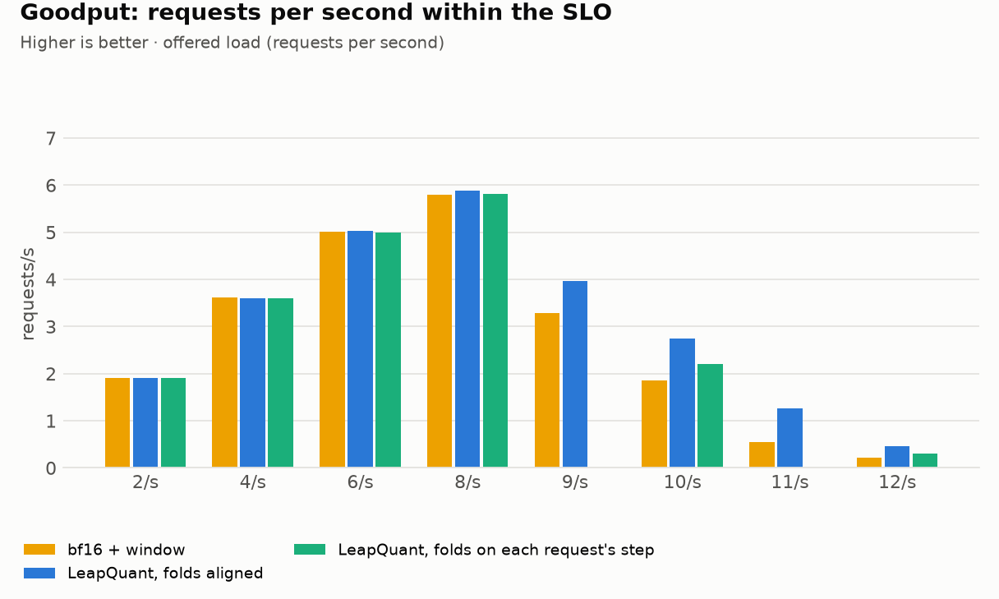
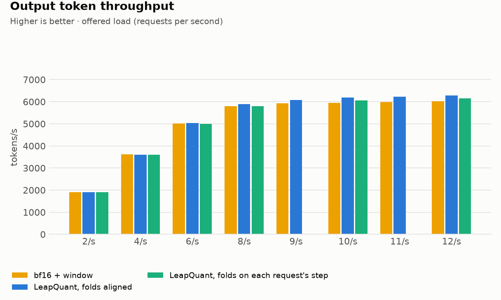
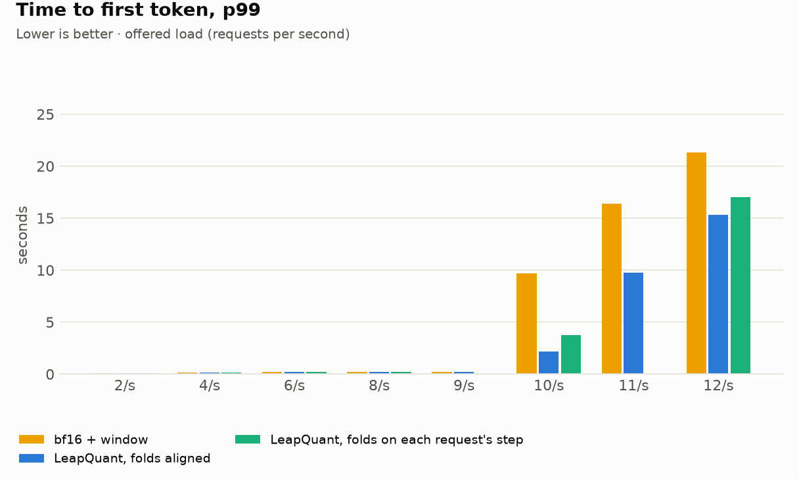
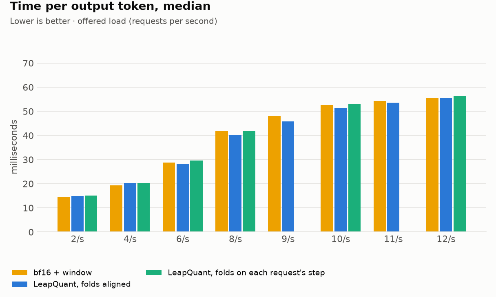
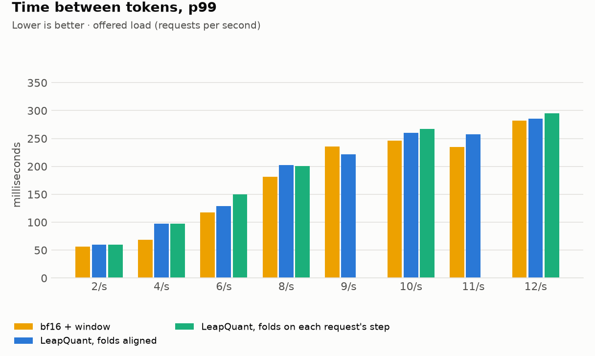

Open-loop load: goodput, throughput and latency against the offered rate
Requests arrive at a fixed Poisson rate (a slower server does not get a lighter load) with no client-side cap, so waiting in the server's queue is part of the time to first token. Goodput counts the requests that met the SLO: ttft <= 2000 ms, tpot <= 50 ms. Shape: 1,000 in / 1,000 out. 600 requests per rate.
Goodput: requests per second within the SLO

Output token throughput

Time to first token, p99

Time per output token, median

Time between tokens, p99

| Offered, req/s | Server | Goodput, req/s | Completed, req/s | Output tokens/s | TTFT median, ms | TTFT p99, ms | TPOT median, ms | TPOT p99, ms | ITL median, ms | ITL p99, ms | E2E median, ms | E2E p99, ms |
|---|---|---|---|---|---|---|---|---|---|---|---|---|
| 2 | bf16 + window | 1.90 | 1.90 | 1,902 | 54 | 102 | 14.4 | 15.5 | 13.2 | 56.2 | 14,489 | 15,568 |
| 2 | LeapQuant, folds aligned | 1.90 | 1.90 | 1,899 | 57 | 98 | 15.0 | 15.7 | 13.6 | 59.7 | 14,999 | 15,720 |
| 2 | LeapQuant, folds on each request's step | 1.90 | 1.90 | 1,898 | 57 | 97 | 15.1 | 15.8 | 13.8 | 60.2 | 15,157 | 15,898 |
| 4 | bf16 + window | 3.61 | 3.61 | 3,611 | 56 | 154 | 19.3 | 20.0 | 16.1 | 68.4 | 19,370 | 20,071 |
| 4 | LeapQuant, folds aligned | 3.60 | 3.60 | 3,600 | 59 | 133 | 20.2 | 20.9 | 16.4 | 97.2 | 20,292 | 20,939 |
| 4 | LeapQuant, folds on each request's step | 3.60 | 3.60 | 3,599 | 61 | 141 | 20.4 | 21.1 | 16.7 | 97.7 | 20,388 | 21,147 |
| 6 | bf16 + window | 5.02 | 5.02 | 5,018 | 62 | 192 | 28.7 | 31.2 | 21.8 | 118.0 | 28,733 | 31,301 |
| 6 | LeapQuant, folds aligned | 5.03 | 5.03 | 5,034 | 65 | 198 | 28.0 | 31.0 | 20.7 | 129.2 | 28,059 | 31,033 |
| 6 | LeapQuant, folds on each request's step | 4.99 | 4.99 | 4,991 | 66 | 191 | 29.6 | 32.9 | 22.3 | 150.3 | 29,691 | 32,915 |
| 8 | bf16 + window | 5.79 | 5.79 | 5,794 | 70 | 219 | 41.8 | 48.9 | 32.1 | 181.2 | 41,821 | 48,866 |
| 8 | LeapQuant, folds aligned | 5.89 | 5.89 | 5,891 | 73 | 213 | 40.1 | 47.3 | 29.5 | 202.5 | 40,158 | 47,330 |
| 8 | LeapQuant, folds on each request's step | 5.81 | 5.81 | 5,806 | 74 | 196 | 42.0 | 49.2 | 31.9 | 201.0 | 42,029 | 49,222 |
| 9 | bf16 + window | 3.28 | 5.94 | 5,936 | 76 | 236 | 48.2 | 55.7 | 38.0 | 236.1 | 48,299 | 55,753 |
| 9 | LeapQuant, folds aligned | 3.96 | 6.09 | 6,085 | 77 | 234 | 45.9 | 53.7 | 34.7 | 221.5 | 45,988 | 53,762 |
| 10 | bf16 + window | 1.85 | 5.94 | 5,943 | 85 | 9,710 | 52.6 | 59.4 | 43.6 | 246.3 | 52,619 | 59,418 |
| 10 | LeapQuant, folds aligned | 2.75 | 6.19 | 6,193 | 86 | 2,172 | 51.3 | 57.9 | 43.2 | 259.9 | 51,341 | 57,939 |
| 10 | LeapQuant, folds on each request's step | 2.20 | 6.06 | 6,061 | 86 | 3,743 | 53.1 | 59.5 | 43.1 | 266.9 | 53,154 | 59,557 |
| 11 | bf16 + window | 0.54 | 5.98 | 5,977 | 95 | 16,373 | 54.3 | 60.8 | 46.4 | 235.1 | 54,346 | 60,875 |
| 11 | LeapQuant, folds aligned | 1.26 | 6.23 | 6,232 | 91 | 9,781 | 53.6 | 60.2 | 46.3 | 257.6 | 53,629 | 60,241 |
| 12 | bf16 + window | 0.22 | 6.03 | 6,026 | 98 | 21,342 | 55.5 | 61.6 | 48.2 | 282.3 | 55,538 | 61,664 |
| 12 | LeapQuant, folds aligned | 0.46 | 6.29 | 6,289 | 98 | 15,332 | 55.7 | 61.0 | 46.4 | 285.7 | 55,732 | 61,085 |
| 12 | LeapQuant, folds on each request's step | 0.31 | 6.14 | 6,145 | 94 | 17,001 | 56.3 | 62.0 | 48.6 | 295.5 | 56,408 | 61,975 |
Every metric, per offered rate
2 requests/s offered
| Metric | bf16 + window | LeapQuant, folds aligned | LeapQuant, folds on each request's step | LeapQuant, folds aligned ÷ bf16 + window | LeapQuant, folds on each request's step ÷ bf16 + window |
|---|---|---|---|---|---|
| Throughput (one GPU: also the figure per GPU) | |||||
| Output token throughput (tok/s) | 1,902 | 1,899 | 1,898 | 0.998 | 0.998 |
| Total token throughput (tok/s) | 3,804 | 3,798 | 3,797 | 0.998 | 0.998 |
| Input token throughput (tok/s) | 1,902 | 1,899 | 1,898 | 0.998 | 0.998 |
| Request throughput (req/s) | 1.90 | 1.90 | 1.90 | 1.000 | 1.000 |
| Peak output token throughput (tok/s) | 2,808 | 2,785 | 2,769 | 0.992 | 0.986 |
| Speed per user (interactivity) | |||||
| Speed per user, median (tok/s) | 69.2 | 66.8 | 66.2 | 0.966 | 0.956 |
| Speed per user, 90% of requests at least (tok/s) | 66.5 | 64.4 | 63.8 | 0.967 | 0.959 |
| Speed per user, 99% of requests at least (tok/s) | 64.4 | 63.8 | 63.1 | 0.990 | 0.980 |
| Time to first token | |||||
| Mean TTFT (ms) | 57 | 60 | 60 | 1.056 | 1.061 |
| Median TTFT (ms) | 54 | 57 | 57 | 1.057 | 1.063 |
| P90 TTFT (ms) | 65 | 69 | 78 | 1.054 | 1.192 |
| P95 TTFT (ms) | 85 | 90 | 89 | 1.055 | 1.045 |
| P99 TTFT (ms) | 102 | 98 | 97 | 0.961 | 0.954 |
| Time per output token (after the first) | |||||
| Mean TPOT (ms) | 14.4 | 14.9 | 15.1 | 1.036 | 1.046 |
| Median TPOT (ms) | 14.4 | 15.0 | 15.1 | 1.035 | 1.046 |
| P90 TPOT (ms) | 15.0 | 15.5 | 15.7 | 1.034 | 1.043 |
| P95 TPOT (ms) | 15.2 | 15.6 | 15.7 | 1.028 | 1.037 |
| P99 TPOT (ms) | 15.5 | 15.7 | 15.8 | 1.010 | 1.021 |
| Time between tokens | |||||
| Mean ITL (ms) | 14.4 | 14.9 | 15.1 | 1.036 | 1.046 |
| Median ITL (ms) | 13.2 | 13.6 | 13.8 | 1.026 | 1.043 |
| P90 ITL (ms) | 14.0 | 14.4 | 14.3 | 1.030 | 1.026 |
| P95 ITL (ms) | 14.3 | 15.7 | 14.6 | 1.097 | 1.022 |
| P99 ITL (ms) | 56.2 | 59.7 | 60.2 | 1.064 | 1.072 |
| Max ITL (ms) | 189 | 185 | 246 | 0.981 | 1.301 |
| End-to-end latency | |||||
| Mean E2E Latency (ms) | 14,460 | 14,984 | 15,122 | 1.036 | 1.046 |
| Median E2E Latency (ms) | 14,489 | 14,999 | 15,157 | 1.035 | 1.046 |
| P90 E2E Latency (ms) | 15,071 | 15,576 | 15,709 | 1.034 | 1.042 |
| P95 E2E Latency (ms) | 15,225 | 15,641 | 15,777 | 1.027 | 1.036 |
| P99 E2E Latency (ms) | 15,568 | 15,720 | 15,898 | 1.010 | 1.021 |
| Load, requests, tokens, memory | |||||
| Concurrency | 27.50 | 28.46 | 28.71 | ||
| Peak concurrent requests | 41 | 43 | 43 | ||
| Successful requests | 600 | 600 | 600 | ||
| Benchmark duration (s) | 315.4 | 315.9 | 316.1 | 1.002 | 1.002 |
| Total input tokens | 600,000 | 600,000 | 600,000 | ||
| Total generated tokens | 600,000 | 600,000 | 600,000 | ||
| Client settings | |||||
| Prompts | 600 | 600 | 600 | ||
| Input / output tokens | 1,000 / 1,000 exact | 1,000 / 1,000 exact | 1,000 / 1,000 exact | ||
| Arrival rate, requests/s | 2.0 | 2.0 | 2.0 | ||
| Client concurrency limit | None | None | None | ||
| Output length forced (ignore EOS) | yes | yes | yes | ||
| Warm-up requests | 3 | 3 | 3 | ||
| Cache flushed before the point | yes | yes | yes | ||
| Temperature | 0.0 | 0.0 | 0.0 | ||
| Seed | 1 | 1 | 1 | ||
| Goodput SLO | ttft <= 2000 ms, tpot <= 50 ms | ttft <= 2000 ms, tpot <= 50 ms | ttft <= 2000 ms, tpot <= 50 ms | ||
| Request goodput (req/s) | 1.90 | 1.90 | 1.90 |
4 requests/s offered
| Metric | bf16 + window | LeapQuant, folds aligned | LeapQuant, folds on each request's step | LeapQuant, folds aligned ÷ bf16 + window | LeapQuant, folds on each request's step ÷ bf16 + window |
|---|---|---|---|---|---|
| Throughput (one GPU: also the figure per GPU) | |||||
| Output token throughput (tok/s) | 3,611 | 3,600 | 3,599 | 0.997 | 0.997 |
| Total token throughput (tok/s) | 7,222 | 7,200 | 7,197 | 0.997 | 0.997 |
| Input token throughput (tok/s) | 3,611 | 3,600 | 3,599 | 0.997 | 0.997 |
| Request throughput (req/s) | 3.61 | 3.60 | 3.60 | 0.997 | 0.997 |
| Peak output token throughput (tok/s) | 4,930 | 4,836 | 4,820 | 0.981 | 0.978 |
| Speed per user (interactivity) | |||||
| Speed per user, median (tok/s) | 51.7 | 49.4 | 49.1 | 0.955 | 0.950 |
| Speed per user, 90% of requests at least (tok/s) | 50.6 | 48.4 | 48.0 | 0.955 | 0.949 |
| Speed per user, 99% of requests at least (tok/s) | 50.0 | 47.8 | 47.5 | 0.957 | 0.950 |
| Time to first token | |||||
| Mean TTFT (ms) | 63 | 65 | 66 | 1.043 | 1.060 |
| Median TTFT (ms) | 56 | 59 | 61 | 1.048 | 1.076 |
| P90 TTFT (ms) | 92 | 92 | 92 | 1.002 | 1.004 |
| P95 TTFT (ms) | 98 | 99 | 98 | 1.012 | 1.002 |
| P99 TTFT (ms) | 154 | 133 | 141 | 0.866 | 0.917 |
| Time per output token (after the first) | |||||
| Mean TPOT (ms) | 18.9 | 19.8 | 19.9 | 1.048 | 1.054 |
| Median TPOT (ms) | 19.3 | 20.2 | 20.4 | 1.048 | 1.053 |
| P90 TPOT (ms) | 19.8 | 20.7 | 20.8 | 1.047 | 1.054 |
| P95 TPOT (ms) | 19.9 | 20.8 | 20.9 | 1.045 | 1.052 |
| P99 TPOT (ms) | 20.0 | 20.9 | 21.1 | 1.044 | 1.052 |
| Time between tokens | |||||
| Mean ITL (ms) | 18.9 | 19.8 | 19.9 | 1.048 | 1.054 |
| Median ITL (ms) | 16.1 | 16.4 | 16.7 | 1.022 | 1.040 |
| P90 ITL (ms) | 17.0 | 20.0 | 17.7 | 1.178 | 1.042 |
| P95 ITL (ms) | 58.3 | 62.1 | 62.8 | 1.066 | 1.077 |
| P99 ITL (ms) | 68.4 | 97.2 | 97.7 | 1.420 | 1.427 |
| Max ITL (ms) | 317 | 323 | 312 | 1.019 | 0.984 |
| End-to-end latency | |||||
| Mean E2E Latency (ms) | 18,966 | 19,878 | 19,987 | 1.048 | 1.054 |
| Median E2E Latency (ms) | 19,370 | 20,292 | 20,388 | 1.048 | 1.053 |
| P90 E2E Latency (ms) | 19,787 | 20,730 | 20,863 | 1.048 | 1.054 |
| P95 E2E Latency (ms) | 19,916 | 20,823 | 20,956 | 1.046 | 1.052 |
| P99 E2E Latency (ms) | 20,071 | 20,939 | 21,147 | 1.043 | 1.054 |
| Load, requests, tokens, memory | |||||
| Concurrency | 68.49 | 71.56 | 71.92 | ||
| Peak concurrent requests | 89 | 94 | 94 | ||
| Successful requests | 600 | 600 | 600 | ||
| Benchmark duration (s) | 166.2 | 166.7 | 166.7 | 1.003 | 1.003 |
| Total input tokens | 600,000 | 600,000 | 600,000 | ||
| Total generated tokens | 600,000 | 600,000 | 600,000 | ||
| Client settings | |||||
| Prompts | 600 | 600 | 600 | ||
| Input / output tokens | 1,000 / 1,000 exact | 1,000 / 1,000 exact | 1,000 / 1,000 exact | ||
| Arrival rate, requests/s | 4.0 | 4.0 | 4.0 | ||
| Client concurrency limit | None | None | None | ||
| Output length forced (ignore EOS) | yes | yes | yes | ||
| Warm-up requests | 3 | 3 | 3 | ||
| Cache flushed before the point | yes | yes | yes | ||
| Temperature | 0.0 | 0.0 | 0.0 | ||
| Seed | 1 | 1 | 1 | ||
| Goodput SLO | ttft <= 2000 ms, tpot <= 50 ms | ttft <= 2000 ms, tpot <= 50 ms | ttft <= 2000 ms, tpot <= 50 ms | ||
| Request goodput (req/s) | 3.61 | 3.60 | 3.60 |
6 requests/s offered
| Metric | bf16 + window | LeapQuant, folds aligned | LeapQuant, folds on each request's step | LeapQuant, folds aligned ÷ bf16 + window | LeapQuant, folds on each request's step ÷ bf16 + window |
|---|---|---|---|---|---|
| Throughput (one GPU: also the figure per GPU) | |||||
| Output token throughput (tok/s) | 5,018 | 5,034 | 4,991 | 1.003 | 0.995 |
| Total token throughput (tok/s) | 10,036 | 10,069 | 9,983 | 1.003 | 0.995 |
| Input token throughput (tok/s) | 5,018 | 5,034 | 4,991 | 1.003 | 0.995 |
| Request throughput (req/s) | 5.02 | 5.03 | 4.99 | 1.002 | 0.994 |
| Peak output token throughput (tok/s) | 7,818 | 8,001 | 7,994 | 1.023 | 1.023 |
| Speed per user (interactivity) | |||||
| Speed per user, median (tok/s) | 34.8 | 35.7 | 33.7 | 1.024 | 0.968 |
| Speed per user, 90% of requests at least (tok/s) | 32.6 | 32.9 | 31.3 | 1.010 | 0.959 |
| Speed per user, 99% of requests at least (tok/s) | 32.0 | 32.3 | 30.4 | 1.008 | 0.951 |
| Time to first token | |||||
| Mean TTFT (ms) | 71 | 75 | 75 | 1.056 | 1.057 |
| Median TTFT (ms) | 62 | 65 | 66 | 1.054 | 1.066 |
| P90 TTFT (ms) | 100 | 102 | 103 | 1.027 | 1.031 |
| P95 TTFT (ms) | 118 | 118 | 119 | 1.005 | 1.012 |
| P99 TTFT (ms) | 192 | 198 | 191 | 1.033 | 0.994 |
| Time per output token (after the first) | |||||
| Mean TPOT (ms) | 27.4 | 27.0 | 28.5 | 0.985 | 1.039 |
| Median TPOT (ms) | 28.7 | 28.0 | 29.6 | 0.977 | 1.033 |
| P90 TPOT (ms) | 30.7 | 30.4 | 32.0 | 0.990 | 1.043 |
| P95 TPOT (ms) | 30.9 | 30.6 | 32.6 | 0.989 | 1.054 |
| P99 TPOT (ms) | 31.2 | 31.0 | 32.9 | 0.992 | 1.052 |
| Time between tokens | |||||
| Mean ITL (ms) | 27.4 | 27.0 | 28.5 | 0.985 | 1.039 |
| Median ITL (ms) | 21.8 | 20.7 | 22.3 | 0.948 | 1.022 |
| P90 ITL (ms) | 32.9 | 33.1 | 39.0 | 1.006 | 1.183 |
| P95 ITL (ms) | 68.1 | 69.6 | 71.8 | 1.023 | 1.055 |
| P99 ITL (ms) | 118.0 | 129.2 | 150.3 | 1.095 | 1.274 |
| Max ITL (ms) | 360 | 360 | 356 | 1.002 | 0.989 |
| End-to-end latency | |||||
| Mean E2E Latency (ms) | 27,425 | 27,031 | 28,509 | 0.986 | 1.040 |
| Median E2E Latency (ms) | 28,733 | 28,059 | 29,691 | 0.977 | 1.033 |
| P90 E2E Latency (ms) | 30,743 | 30,432 | 32,030 | 0.990 | 1.042 |
| P95 E2E Latency (ms) | 30,991 | 30,686 | 32,667 | 0.990 | 1.054 |
| P99 E2E Latency (ms) | 31,301 | 31,033 | 32,915 | 0.991 | 1.052 |
| Load, requests, tokens, memory | |||||
| Concurrency | 137.62 | 136.08 | 142.30 | ||
| Peak concurrent requests | 195 | 194 | 206 | ||
| Successful requests | 600 | 600 | 600 | ||
| Benchmark duration (s) | 119.6 | 119.2 | 120.2 | 0.997 | 1.005 |
| Total input tokens | 600,000 | 600,000 | 600,000 | ||
| Total generated tokens | 600,000 | 600,000 | 600,000 | ||
| Client settings | |||||
| Prompts | 600 | 600 | 600 | ||
| Input / output tokens | 1,000 / 1,000 exact | 1,000 / 1,000 exact | 1,000 / 1,000 exact | ||
| Arrival rate, requests/s | 6.0 | 6.0 | 6.0 | ||
| Client concurrency limit | None | None | None | ||
| Output length forced (ignore EOS) | yes | yes | yes | ||
| Warm-up requests | 3 | 3 | 3 | ||
| Cache flushed before the point | yes | yes | yes | ||
| Temperature | 0.0 | 0.0 | 0.0 | ||
| Seed | 1 | 1 | 1 | ||
| Goodput SLO | ttft <= 2000 ms, tpot <= 50 ms | ttft <= 2000 ms, tpot <= 50 ms | ttft <= 2000 ms, tpot <= 50 ms | ||
| Request goodput (req/s) | 5.02 | 5.03 | 4.99 |
8 requests/s offered
| Metric | bf16 + window | LeapQuant, folds aligned | LeapQuant, folds on each request's step | LeapQuant, folds aligned ÷ bf16 + window | LeapQuant, folds on each request's step ÷ bf16 + window |
|---|---|---|---|---|---|
| Throughput (one GPU: also the figure per GPU) | |||||
| Output token throughput (tok/s) | 5,794 | 5,891 | 5,806 | 1.017 | 1.002 |
| Total token throughput (tok/s) | 11,588 | 11,782 | 11,612 | 1.017 | 1.002 |
| Input token throughput (tok/s) | 5,794 | 5,891 | 5,806 | 1.017 | 1.002 |
| Request throughput (req/s) | 5.79 | 5.89 | 5.81 | 1.017 | 1.003 |
| Peak output token throughput (tok/s) | 9,540 | 9,857 | 9,805 | 1.033 | 1.028 |
| Speed per user (interactivity) | |||||
| Speed per user, median (tok/s) | 23.9 | 24.9 | 23.8 | 1.041 | 0.996 |
| Speed per user, 90% of requests at least (tok/s) | 20.6 | 21.4 | 20.5 | 1.038 | 0.995 |
| Speed per user, 99% of requests at least (tok/s) | 20.5 | 21.1 | 20.3 | 1.033 | 0.993 |
| Time to first token | |||||
| Mean TTFT (ms) | 81 | 84 | 84 | 1.034 | 1.036 |
| Median TTFT (ms) | 70 | 73 | 74 | 1.040 | 1.061 |
| P90 TTFT (ms) | 124 | 128 | 126 | 1.034 | 1.018 |
| P95 TTFT (ms) | 151 | 155 | 154 | 1.032 | 1.024 |
| P99 TTFT (ms) | 219 | 213 | 196 | 0.974 | 0.895 |
| Time per output token (after the first) | |||||
| Mean TPOT (ms) | 40.1 | 38.5 | 40.3 | 0.960 | 1.005 |
| Median TPOT (ms) | 41.8 | 40.1 | 42.0 | 0.960 | 1.004 |
| P90 TPOT (ms) | 48.5 | 46.8 | 48.8 | 0.963 | 1.005 |
| P95 TPOT (ms) | 48.7 | 47.2 | 49.0 | 0.968 | 1.006 |
| P99 TPOT (ms) | 48.9 | 47.3 | 49.2 | 0.968 | 1.007 |
| Time between tokens | |||||
| Mean ITL (ms) | 40.1 | 38.5 | 40.3 | 0.960 | 1.005 |
| Median ITL (ms) | 32.1 | 29.5 | 31.9 | 0.920 | 0.993 |
| P90 ITL (ms) | 74.4 | 75.2 | 77.7 | 1.011 | 1.044 |
| P95 ITL (ms) | 90.0 | 92.0 | 92.9 | 1.022 | 1.033 |
| P99 ITL (ms) | 181.2 | 202.5 | 201.0 | 1.117 | 1.109 |
| Max ITL (ms) | 461 | 451 | 414 | 0.978 | 0.897 |
| End-to-end latency | |||||
| Mean E2E Latency (ms) | 40,185 | 38,579 | 40,384 | 0.960 | 1.005 |
| Median E2E Latency (ms) | 41,821 | 40,158 | 42,029 | 0.960 | 1.005 |
| P90 E2E Latency (ms) | 48,564 | 46,777 | 48,783 | 0.963 | 1.005 |
| P95 E2E Latency (ms) | 48,762 | 47,195 | 49,052 | 0.968 | 1.006 |
| P99 E2E Latency (ms) | 48,866 | 47,330 | 49,222 | 0.969 | 1.007 |
| Load, requests, tokens, memory | |||||
| Concurrency | 232.84 | 227.27 | 234.46 | ||
| Peak concurrent requests | 388 | 374 | 390 | ||
| Successful requests | 600 | 600 | 600 | ||
| Benchmark duration (s) | 103.5 | 101.8 | 103.3 | 0.984 | 0.998 |
| Total input tokens | 600,000 | 600,000 | 600,000 | ||
| Total generated tokens | 600,000 | 600,000 | 600,000 | ||
| Client settings | |||||
| Prompts | 600 | 600 | 600 | ||
| Input / output tokens | 1,000 / 1,000 exact | 1,000 / 1,000 exact | 1,000 / 1,000 exact | ||
| Arrival rate, requests/s | 8.0 | 8.0 | 8.0 | ||
| Client concurrency limit | None | None | None | ||
| Output length forced (ignore EOS) | yes | yes | yes | ||
| Warm-up requests | 3 | 3 | 3 | ||
| Cache flushed before the point | yes | yes | yes | ||
| Temperature | 0.0 | 0.0 | 0.0 | ||
| Seed | 1 | 1 | 1 | ||
| Goodput SLO | ttft <= 2000 ms, tpot <= 50 ms | ttft <= 2000 ms, tpot <= 50 ms | ttft <= 2000 ms, tpot <= 50 ms | ||
| Request goodput (req/s) | 5.79 | 5.89 | 5.81 |
9 requests/s offered
| Metric | bf16 + window | LeapQuant, folds aligned | LeapQuant, folds aligned ÷ bf16 + window |
|---|---|---|---|
| Throughput (one GPU: also the figure per GPU) | |||
| Output token throughput (tok/s) | 5,936 | 6,085 | 1.025 |
| Total token throughput (tok/s) | 11,872 | 12,171 | 1.025 |
| Input token throughput (tok/s) | 5,936 | 6,085 | 1.025 |
| Request throughput (req/s) | 5.94 | 6.09 | 1.025 |
| Peak output token throughput (tok/s) | 9,719 | 10,284 | 1.058 |
| Speed per user (interactivity) | |||
| Speed per user, median (tok/s) | 20.7 | 21.8 | 1.050 |
| Speed per user, 90% of requests at least (tok/s) | 18.1 | 18.8 | 1.039 |
| Speed per user, 99% of requests at least (tok/s) | 17.9 | 18.6 | 1.037 |
| Time to first token | |||
| Mean TTFT (ms) | 93 | 88 | 0.947 |
| Median TTFT (ms) | 76 | 77 | 1.019 |
| P90 TTFT (ms) | 135 | 133 | 0.986 |
| P95 TTFT (ms) | 168 | 158 | 0.945 |
| P99 TTFT (ms) | 236 | 234 | 0.991 |
| Time per output token (after the first) | |||
| Mean TPOT (ms) | 46.7 | 44.8 | 0.958 |
| Median TPOT (ms) | 48.2 | 45.9 | 0.952 |
| P90 TPOT (ms) | 55.4 | 53.2 | 0.962 |
| P95 TPOT (ms) | 55.5 | 53.5 | 0.964 |
| P99 TPOT (ms) | 55.7 | 53.7 | 0.964 |
| Time between tokens | |||
| Mean ITL (ms) | 46.7 | 44.8 | 0.958 |
| Median ITL (ms) | 38.0 | 34.7 | 0.914 |
| P90 ITL (ms) | 80.7 | 81.3 | 1.007 |
| P95 ITL (ms) | 119.6 | 122.2 | 1.022 |
| P99 ITL (ms) | 236.1 | 221.5 | 0.938 |
| Max ITL (ms) | 483 | 483 | 1.000 |
| End-to-end latency | |||
| Mean E2E Latency (ms) | 46,773 | 44,799 | 0.958 |
| Median E2E Latency (ms) | 48,299 | 45,988 | 0.952 |
| P90 E2E Latency (ms) | 55,361 | 53,263 | 0.962 |
| P95 E2E Latency (ms) | 55,556 | 53,555 | 0.964 |
| P99 E2E Latency (ms) | 55,753 | 53,762 | 0.964 |
| Load, requests, tokens, memory | |||
| Concurrency | 277.65 | 272.62 | |
| Peak concurrent requests | 472 | 463 | |
| Successful requests | 600 | 600 | |
| Benchmark duration (s) | 101.1 | 98.6 | 0.975 |
| Total input tokens | 600,000 | 600,000 | |
| Total generated tokens | 600,000 | 600,000 | |
| Client settings | |||
| Prompts | 600 | 600 | |
| Input / output tokens | 1,000 / 1,000 exact | 1,000 / 1,000 exact | |
| Arrival rate, requests/s | 9.0 | 9.0 | |
| Client concurrency limit | None | None | |
| Output length forced (ignore EOS) | yes | yes | |
| Warm-up requests | 3 | 3 | |
| Cache flushed before the point | yes | yes | |
| Temperature | 0.0 | 0.0 | |
| Seed | 1 | 1 | |
| Goodput SLO | ttft <= 2000 ms, tpot <= 50 ms | ttft <= 2000 ms, tpot <= 50 ms | |
| Request goodput (req/s) | 3.28 | 3.96 |
10 requests/s offered
| Metric | bf16 + window | LeapQuant, folds aligned | LeapQuant, folds on each request's step | LeapQuant, folds aligned ÷ bf16 + window | LeapQuant, folds on each request's step ÷ bf16 + window |
|---|---|---|---|---|---|
| Throughput (one GPU: also the figure per GPU) | |||||
| Output token throughput (tok/s) | 5,943 | 6,193 | 6,061 | 1.042 | 1.020 |
| Total token throughput (tok/s) | 11,885 | 12,387 | 12,122 | 1.042 | 1.020 |
| Input token throughput (tok/s) | 5,943 | 6,193 | 6,061 | 1.042 | 1.020 |
| Request throughput (req/s) | 5.94 | 6.19 | 6.06 | 1.042 | 1.020 |
| Peak output token throughput (tok/s) | 9,424 | 10,559 | 9,863 | 1.120 | 1.047 |
| Speed per user (interactivity) | |||||
| Speed per user, median (tok/s) | 19.0 | 19.5 | 18.8 | 1.024 | 0.989 |
| Speed per user, 90% of requests at least (tok/s) | 17.0 | 17.4 | 16.9 | 1.026 | 0.997 |
| Speed per user, 99% of requests at least (tok/s) | 16.8 | 17.3 | 16.8 | 1.026 | 0.998 |
| Time to first token | |||||
| Mean TTFT (ms) | 721 | 146 | 207 | 0.202 | 0.287 |
| Median TTFT (ms) | 85 | 86 | 86 | 1.006 | 1.006 |
| P90 TTFT (ms) | 673 | 168 | 165 | 0.249 | 0.246 |
| P95 TTFT (ms) | 5,963 | 212 | 243 | 0.036 | 0.041 |
| P99 TTFT (ms) | 9,710 | 2,172 | 3,743 | 0.224 | 0.386 |
| Time per output token (after the first) | |||||
| Mean TPOT (ms) | 50.6 | 49.6 | 51.4 | 0.980 | 1.015 |
| Median TPOT (ms) | 52.6 | 51.3 | 53.1 | 0.976 | 1.011 |
| P90 TPOT (ms) | 58.9 | 57.4 | 59.1 | 0.974 | 1.003 |
| P95 TPOT (ms) | 59.2 | 57.7 | 59.3 | 0.975 | 1.003 |
| P99 TPOT (ms) | 59.4 | 57.9 | 59.5 | 0.975 | 1.002 |
| Time between tokens | |||||
| Mean ITL (ms) | 50.6 | 49.6 | 51.4 | 0.980 | 1.015 |
| Median ITL (ms) | 43.6 | 43.2 | 43.1 | 0.990 | 0.988 |
| P90 ITL (ms) | 86.2 | 82.9 | 88.9 | 0.962 | 1.032 |
| P95 ITL (ms) | 122.1 | 128.4 | 129.3 | 1.051 | 1.059 |
| P99 ITL (ms) | 246.3 | 259.9 | 266.9 | 1.055 | 1.084 |
| Max ITL (ms) | 527 | 573 | 529 | 1.088 | 1.003 |
| End-to-end latency | |||||
| Mean E2E Latency (ms) | 51,300 | 49,713 | 51,559 | 0.969 | 1.005 |
| Median E2E Latency (ms) | 52,619 | 51,341 | 53,154 | 0.976 | 1.010 |
| P90 E2E Latency (ms) | 58,930 | 57,408 | 59,088 | 0.974 | 1.003 |
| P95 E2E Latency (ms) | 59,215 | 57,720 | 59,346 | 0.975 | 1.002 |
| P99 E2E Latency (ms) | 59,418 | 57,939 | 59,557 | 0.975 | 1.002 |
| Load, requests, tokens, memory | |||||
| Concurrency | 304.86 | 307.89 | 312.49 | ||
| Peak concurrent requests | 512 | 514 | 520 | ||
| Successful requests | 600 | 600 | 600 | ||
| Benchmark duration (s) | 101.0 | 96.9 | 99.0 | 0.959 | 0.980 |
| Total input tokens | 600,000 | 600,000 | 600,000 | ||
| Total generated tokens | 600,000 | 600,000 | 600,000 | ||
| Client settings | |||||
| Prompts | 600 | 600 | 600 | ||
| Input / output tokens | 1,000 / 1,000 exact | 1,000 / 1,000 exact | 1,000 / 1,000 exact | ||
| Arrival rate, requests/s | 10.0 | 10.0 | 10.0 | ||
| Client concurrency limit | None | None | None | ||
| Output length forced (ignore EOS) | yes | yes | yes | ||
| Warm-up requests | 3 | 3 | 3 | ||
| Cache flushed before the point | yes | yes | yes | ||
| Temperature | 0.0 | 0.0 | 0.0 | ||
| Seed | 1 | 1 | 1 | ||
| Goodput SLO | ttft <= 2000 ms, tpot <= 50 ms | ttft <= 2000 ms, tpot <= 50 ms | ttft <= 2000 ms, tpot <= 50 ms | ||
| Request goodput (req/s) | 1.85 | 2.75 | 2.20 |
11 requests/s offered
| Metric | bf16 + window | LeapQuant, folds aligned | LeapQuant, folds aligned ÷ bf16 + window |
|---|---|---|---|
| Throughput (one GPU: also the figure per GPU) | |||
| Output token throughput (tok/s) | 5,977 | 6,232 | 1.043 |
| Total token throughput (tok/s) | 11,953 | 12,463 | 1.043 |
| Input token throughput (tok/s) | 5,977 | 6,232 | 1.043 |
| Request throughput (req/s) | 5.98 | 6.23 | 1.042 |
| Peak output token throughput (tok/s) | 9,945 | 14,439 | 1.452 |
| Speed per user (interactivity) | |||
| Speed per user, median (tok/s) | 18.4 | 18.7 | 1.014 |
| Speed per user, 90% of requests at least (tok/s) | 16.5 | 16.7 | 1.011 |
| Speed per user, 99% of requests at least (tok/s) | 16.4 | 16.6 | 1.011 |
| Time to first token | |||
| Mean TTFT (ms) | 2,109 | 879 | 0.417 |
| Median TTFT (ms) | 95 | 91 | 0.956 |
| P90 TTFT (ms) | 8,599 | 4,937 | 0.574 |
| P95 TTFT (ms) | 13,063 | 6,416 | 0.491 |
| P99 TTFT (ms) | 16,373 | 9,781 | 0.597 |
| Time per output token (after the first) | |||
| Mean TPOT (ms) | 52.0 | 52.0 | 0.999 |
| Median TPOT (ms) | 54.3 | 53.6 | 0.986 |
| P90 TPOT (ms) | 60.5 | 59.8 | 0.989 |
| P95 TPOT (ms) | 60.7 | 60.0 | 0.989 |
| P99 TPOT (ms) | 60.8 | 60.2 | 0.989 |
| Time between tokens | |||
| Mean ITL (ms) | 52.0 | 52.0 | 0.999 |
| Median ITL (ms) | 46.4 | 46.3 | 0.998 |
| P90 ITL (ms) | 85.4 | 82.7 | 0.969 |
| P95 ITL (ms) | 123.4 | 127.9 | 1.036 |
| P99 ITL (ms) | 235.1 | 257.6 | 1.095 |
| Max ITL (ms) | 610 | 561 | 0.921 |
| End-to-end latency | |||
| Mean E2E Latency (ms) | 54,061 | 52,799 | 0.977 |
| Median E2E Latency (ms) | 54,346 | 53,629 | 0.987 |
| P90 E2E Latency (ms) | 60,489 | 59,803 | 0.989 |
| P95 E2E Latency (ms) | 60,690 | 60,036 | 0.989 |
| P99 E2E Latency (ms) | 60,875 | 60,241 | 0.990 |
| Load, requests, tokens, memory | |||
| Concurrency | 323.10 | 329.02 | |
| Peak concurrent requests | 556 | 559 | |
| Successful requests | 600 | 600 | |
| Benchmark duration (s) | 100.4 | 96.3 | 0.959 |
| Total input tokens | 600,000 | 600,000 | |
| Total generated tokens | 600,000 | 600,000 | |
| Client settings | |||
| Prompts | 600 | 600 | |
| Input / output tokens | 1,000 / 1,000 exact | 1,000 / 1,000 exact | |
| Arrival rate, requests/s | 11.0 | 11.0 | |
| Client concurrency limit | None | None | |
| Output length forced (ignore EOS) | yes | yes | |
| Warm-up requests | 3 | 3 | |
| Cache flushed before the point | yes | yes | |
| Temperature | 0.0 | 0.0 | |
| Seed | 1 | 1 | |
| Goodput SLO | ttft <= 2000 ms, tpot <= 50 ms | ttft <= 2000 ms, tpot <= 50 ms | |
| Request goodput (req/s) | 0.54 | 1.26 |
12 requests/s offered
| Metric | bf16 + window | LeapQuant, folds aligned | LeapQuant, folds on each request's step | LeapQuant, folds aligned ÷ bf16 + window | LeapQuant, folds on each request's step ÷ bf16 + window |
|---|---|---|---|---|---|
| Throughput (one GPU: also the figure per GPU) | |||||
| Output token throughput (tok/s) | 6,026 | 6,289 | 6,145 | 1.044 | 1.020 |
| Total token throughput (tok/s) | 12,051 | 12,578 | 12,289 | 1.044 | 1.020 |
| Input token throughput (tok/s) | 6,026 | 6,289 | 6,145 | 1.044 | 1.020 |
| Request throughput (req/s) | 6.03 | 6.29 | 6.14 | 1.043 | 1.018 |
| Peak output token throughput (tok/s) | 9,568 | 10,467 | 10,174 | 1.094 | 1.063 |
| Speed per user (interactivity) | |||||
| Speed per user, median (tok/s) | 18.0 | 18.0 | 17.8 | 0.997 | 0.985 |
| Speed per user, 90% of requests at least (tok/s) | 16.3 | 16.5 | 16.2 | 1.011 | 0.995 |
| Speed per user, 99% of requests at least (tok/s) | 16.2 | 16.4 | 16.1 | 1.010 | 0.995 |
| Time to first token | |||||
| Mean TTFT (ms) | 3,482 | 1,963 | 2,263 | 0.564 | 0.650 |
| Median TTFT (ms) | 98 | 98 | 94 | 1.000 | 0.965 |
| P90 TTFT (ms) | 14,804 | 11,179 | 12,979 | 0.755 | 0.877 |
| P95 TTFT (ms) | 18,447 | 12,350 | 14,084 | 0.669 | 0.763 |
| P99 TTFT (ms) | 21,342 | 15,332 | 17,001 | 0.718 | 0.797 |
| Time per output token (after the first) | |||||
| Mean TPOT (ms) | 52.5 | 53.0 | 53.6 | 1.010 | 1.022 |
| Median TPOT (ms) | 55.5 | 55.7 | 56.3 | 1.003 | 1.015 |
| P90 TPOT (ms) | 61.4 | 60.7 | 61.7 | 0.989 | 1.005 |
| P95 TPOT (ms) | 61.5 | 60.9 | 61.8 | 0.989 | 1.005 |
| P99 TPOT (ms) | 61.6 | 61.0 | 62.0 | 0.990 | 1.005 |
| Time between tokens | |||||
| Mean ITL (ms) | 52.5 | 53.0 | 53.6 | 1.010 | 1.022 |
| Median ITL (ms) | 48.2 | 46.4 | 48.6 | 0.963 | 1.009 |
| P90 ITL (ms) | 81.0 | 77.9 | 78.8 | 0.962 | 0.974 |
| P95 ITL (ms) | 120.4 | 129.3 | 134.7 | 1.074 | 1.119 |
| P99 ITL (ms) | 282.3 | 285.7 | 295.5 | 1.012 | 1.047 |
| Max ITL (ms) | 748 | 691 | 691 | 0.924 | 0.924 |
| End-to-end latency | |||||
| Mean E2E Latency (ms) | 55,886 | 54,924 | 55,846 | 0.983 | 0.999 |
| Median E2E Latency (ms) | 55,538 | 55,732 | 56,408 | 1.003 | 1.016 |
| P90 E2E Latency (ms) | 61,433 | 60,794 | 61,753 | 0.990 | 1.005 |
| P95 E2E Latency (ms) | 61,594 | 60,900 | 61,881 | 0.989 | 1.005 |
| P99 E2E Latency (ms) | 61,664 | 61,085 | 61,975 | 0.991 | 1.005 |
| Load, requests, tokens, memory | |||||
| Concurrency | 336.74 | 345.42 | 343.15 | ||
| Peak concurrent requests | 586 | 598 | 600 | ||
| Successful requests | 600 | 600 | 600 | ||
| Benchmark duration (s) | 99.6 | 95.4 | 97.7 | 0.958 | 0.981 |
| Total input tokens | 600,000 | 600,000 | 600,000 | ||
| Total generated tokens | 600,000 | 600,000 | 600,000 | ||
| Client settings | |||||
| Prompts | 600 | 600 | 600 | ||
| Input / output tokens | 1,000 / 1,000 exact | 1,000 / 1,000 exact | 1,000 / 1,000 exact | ||
| Arrival rate, requests/s | 12.0 | 12.0 | 12.0 | ||
| Client concurrency limit | None | None | None | ||
| Output length forced (ignore EOS) | yes | yes | yes | ||
| Warm-up requests | 3 | 3 | 3 | ||
| Cache flushed before the point | yes | yes | yes | ||
| Temperature | 0.0 | 0.0 | 0.0 | ||
| Seed | 1 | 1 | 1 | ||
| Goodput SLO | ttft <= 2000 ms, tpot <= 50 ms | ttft <= 2000 ms, tpot <= 50 ms | ttft <= 2000 ms, tpot <= 50 ms | ||
| Request goodput (req/s) | 0.22 | 0.46 | 0.31 |
Metrics
- Output token throughput, tokens/s: generated tokens per second, all requests together. One GPU, so this is also the figure per GPU that public benchmarks plot.
- Total token throughput: input plus generated tokens per second. Request throughput: completed requests per second. Peak output token throughput: the most tokens generated in any one-second window (the client's count).
- Speed per user (interactivity), tokens/s: 1000 ÷ a request's time per output token. The median, and the speeds that 90% and 99% of requests reach or beat (from the p90 and p99 TPOT).
- TTFT, time to first token: from sending the request to its first token, queueing and prefill included. TPOT, time per output token: a request's generation time after the first token divided by its other tokens. ITL, time between tokens: every gap between two consecutive tokens of a request (its tail shows the steps that carry a prefill or a fold). E2E latency: the whole request. Mean, median, p90, p95, p99 over the requests of the point.
- Concurrency: the average number of requests in flight; Max request concurrency: the client's limit (the users of the point). Peak concurrent requests: the most requests active at some moment of any one-second window, as the client counts it; a request that ends and one that starts within the same second both count, so it can exceed the limit and is not the number running at once. Peak GPU memory: nvidia-smi's peak for the GPU while the point ran (sampled every 0.5 s), the server's preallocated pools included.
Method
Closed loop, as in SemiAnalysis InferenceX and SGLang's own benchmarks: each point keeps a fixed number of requests in flight (the users) with no arrival-rate limit, random prompts (sglang.benchmark.serving --dataset-name random), exact input and output lengths unless the shape says random, three warm-up requests and a cache flush before the point; output lengths are forced (no early stop), so every server generates the same tokens. Open-loop load at fixed arrival rates, where it was run, is in its own section. Every number on this page is parsed from a log named in the tables; nothing is typed in.
What it does not show
Answer quality (see the task accuracy page), other GPUs, and more than one GPU.
Generated 2026-11-14 14:43 from results/openloop-final, results/openloop by reports/generate_reports.py. All reports.